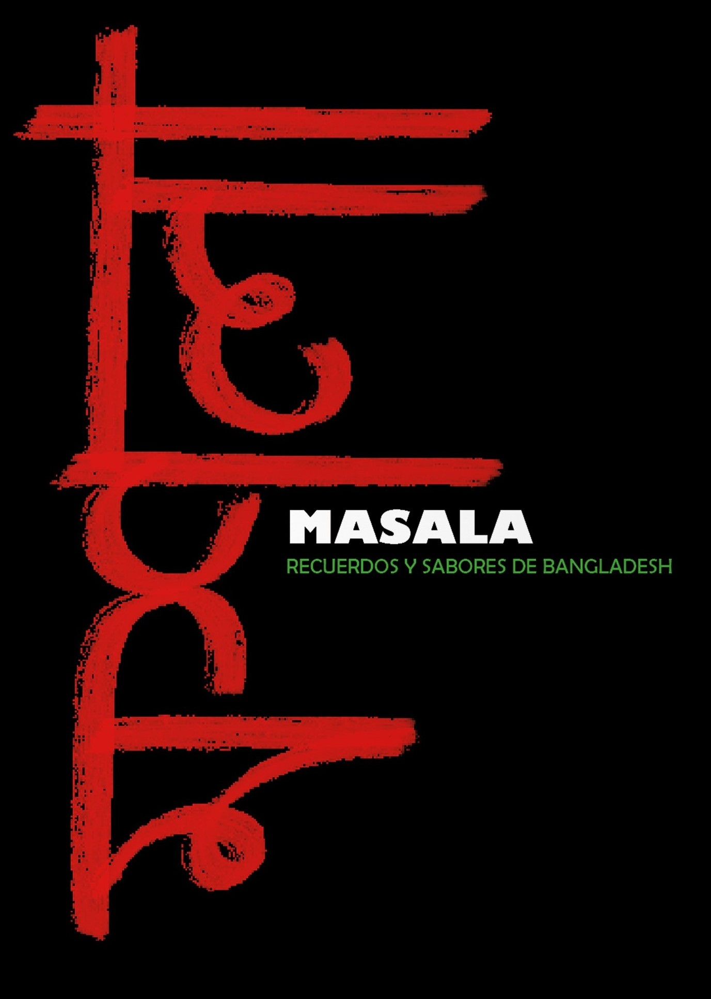

"Halloween" es un pequeño proyecto realizado para la asignatura de Fotografía en el que debía hacer una sesión de retratos en estudio. Elegí la temática de terror para aprender a hacer retratos de estudio con fondo negro. Las modelos son mis compañeras Carmen y Laura.
En este proyecto de fotografía de moda para la asignatura Fotografía para el diseño, trabajamos con una estudiante de diseño de moda, Lucía Cacho Varas, quien nos pidió una sesión para mostrar sus prendas más coloridas y atrevidas en su porfolio. Hicimos las fotos en el espacio Sweet Space Museum con una modelo profesional.
Proyecto realizado junto a
Carla Peña
Xuan Xia
Fabiola Saladino
"Bath" también es un pequeño proyecto realizado para la asignatura de Fotografía en el que debía hacer una sesión fuera del estudio. Lo más fácil era hacerla en el exterior usando luz natural, pero como quería que la localización fuera un baño y este no tenía ventanas, tuve que hacer uso de flash.
"Masala" fue mi proyecto final para la asignatura de Fotografía para el diseño. Consistía en hacer un reportaje sobre un tema de nuestra elección. Trata sobre la comunidad de personas de Bangladesh que viven en Madrid, ya que mi pareja es de allí. Está enfocado en la importancia que dan a su gastronomía, cómo la trasladan aquí y una comparación de cómo ha cambiado su vida aquí en relación con la comida. También es una buena forma de introducir al espectador a la comida y costumbres bengalíes en Madrid.
El reportaje cuenta con más de 80 fotografías maquetadas en un fotolibro digital que puedes DESCARGAR aquí. Hay fotos tanto hechas por mí misma en Madrid, en concreto en el barrio de Lavapiés, donde se concentra la mayor comunidad de bengalíes en la ciudad, como otras fotos hechas por mi pareja en sus viajes a su país que me sirvieron para mostrar el origen de sus costumbres.
